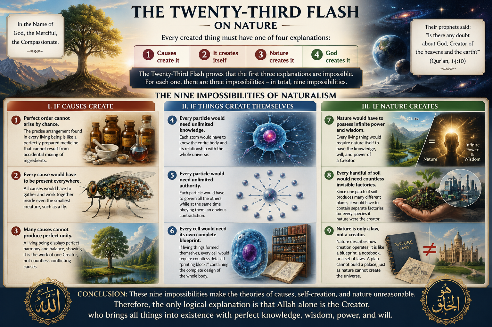

On Nature#

Location: The Flashes (Lem’alar), The Twenty-Third Flash (On Nature)
The Twenty-Third Flash was written to answer the rise of naturalistic atheism, which claims that living things come into existence through physical causes, form themselves, or are created by nature instead of by God. Drawing on the Qur’anic verse,
"Their prophets said: 'Is there any doubt about God, Creator of the heavens and the earth?'" (Qur'an 14:10)
Bediüzzaman explains that every created thing must have one of four explanations:
Causes create it.
It creates itself.
Nature creates it.
God creates it.
He demonstrates that the first three explanations are impossible:
Causes cannot create: Lifeless and unconscious causes cannot produce the wisdom, order, and design found in living beings.
Nothing can create itself: A thing cannot exist before it exists in order to bring itself into being.
Nature cannot create: Nature is only the set of laws by which creation operates; it has neither knowledge, power, nor will to produce anything.
Since these three explanations are impossible, the only reasonable conclusion is that everything is created by the One All-Powerful and All-Wise God. Through clear reasoning and examples from nature, Bediüzzaman shows that belief in Divine Unity is not only a matter of faith but also the most logical explanation for the existence and continual renewal of the universe.
For each one, Bediüzzaman presents three impossibilities, making a total of nine impossibilities.
The Nine Impossibilities of Naturalism
If Causes Create
Perfect order cannot arise by chance: The precise arrangement found in every living being is like a perfectly prepared medicine that cannot result from accidental mixing of ingredients.
Every cause would have to be present everywhere: Since every living thing depends on countless elements, all causes would have to gather and work together inside even the smallest creature, such as a fly.
Causes cannot produce perfect unity: A living being displays perfect harmony and balance, showing it is the work of one Creator, not countless conflicting causes.
If Things Create Themselves
Every particle would need unlimited knowledge: Each atom would have to know the entire body and its relationship with the whole universe.
Every particle would need unlimited authority: Each particle would have to govern all the others while at the same time obeying them, an obvious contradiction.
Every cell would need its own complete blueprint: If living things formed themselves, every cell would require countless detailed “printing blocks” containing the complete design of the whole body.
If Nature Creates
Nature would have to possess infinite power and wisdom: Every living thing would require nature itself to have the knowledge, will, and power of a Creator.
Every handful of soil would need countless invisible factories: Since one patch of soil produces many different plants, it would have to contain separate factories for every species if nature were the creator.
Nature is only a law, not a creator: Nature describes how creation operates; it is like a blueprint, a notebook, or a set of laws. A plan cannot build a palace, just as nature cannot create the universe.
The Twenty-Third Flash concludes that these nine impossibilities leave only one rational explanation: the universe and everything in it are created, sustained, and continually renewed by Allah, the One Creator.